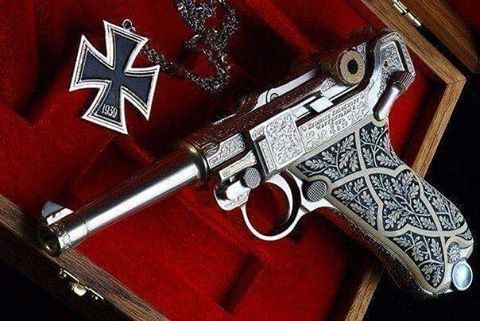
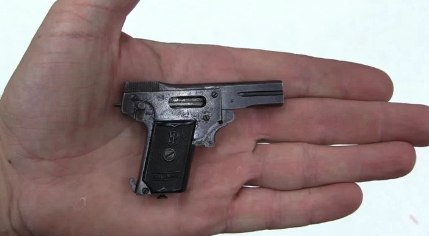
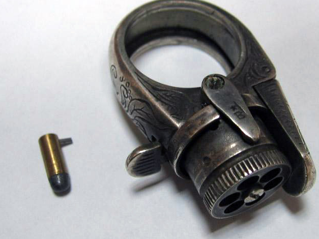
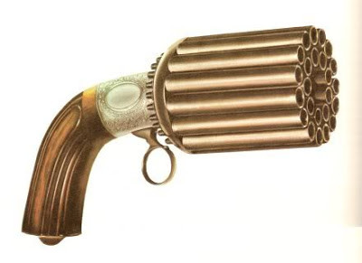

- 名前：野間将吾
- 出身地：鹿児島
- 大学：長崎県立大学
- 年齢：20
-
最近の悩み：Youtubeの広告がうざいのでYoutubePremiumの登録を検討中
- 好きなもの：ゲーム・エアガン・ゲーム実況動画
へんてこな銃の紹介！
-
ガン・シールド

防御しながら銃撃てればよくね？という発想から生まれたこの武器は16世紀のイギリスにて生まれました。
軍の装備にも採用されましたが、重大な欠点がありました。
弾丸を込めながら進軍することができないため、いちいち足を止めないといけないのです！（めんどくさッ…！）
余談ですが、ガン・シールドで検索するとApexの記事しか出ないため驚きました。
-
かぎ型銃

この銃は刑務所の看守が護身用に持っていたもので、16世紀のヨーロッパで見られました。
鍵の形をしていますが、ご安心ください、鍵としても使えます。
この銃の一番の突っ込みどころは保管場所で、普通ならポケットに入れると思いますよね？
しかしポケットは物の出し入れが多いため誤射することも大いにあり得る。
そこで看守たちはこの銃をパンツの中に入れていたそうです。（なぜそうなった）
実際に取り出して銃を撃つ場面を想像すると絵面がひどすぎる。（看守の姿か…これが…？）
-
コリブリ

これはコリブリという世界で一番小さい銃です。
全長はなんと4cmで銃弾の重さは0.2mgという圧倒的小ささ!
殺傷力？松の板を4cmもぶち抜けない銃にそんなもの期待しないでください。
装填にも精度にも難があるため、実用性は皆無です。
しかし、1000丁しか製造されてないため、コレクター間では高値で取引されています。
-
指輪型ピストル

この銃は女性の護身用にイギリスで制作されたものです。
銃弾の大きさはわずか4mmのため殺傷力はなく、この銃で誰かを殺傷したという公的記録は一切ないそうです。
ちなみにオランダでオークションに出品された際、日本円で88万で落札されたそうです。
将来自分もこんな指輪が欲しいです。(銃弾はいいかな…うん)
-
ペッパーボックス・ピストル

この銃は1850年ごろのベルギーで製造され、西部時代のアメリカで大流行しました。
名前の由来は銃身の形状が胡椒挽きに似ているからだそうです。
見た目通り、1回の発射で全弾同時発射できるようにしたものです。
しかし、1回撃ったらすべての弾を込めなおす必要があり、その作業には40分以上かかったそうです。
こんな形状の銃、どうやって携帯してたんでしょうか？